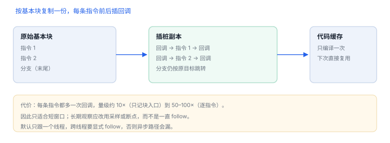
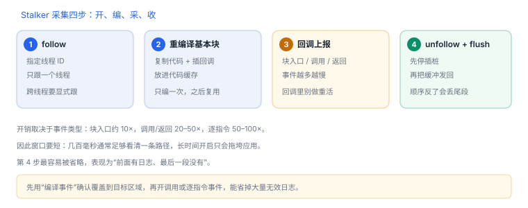
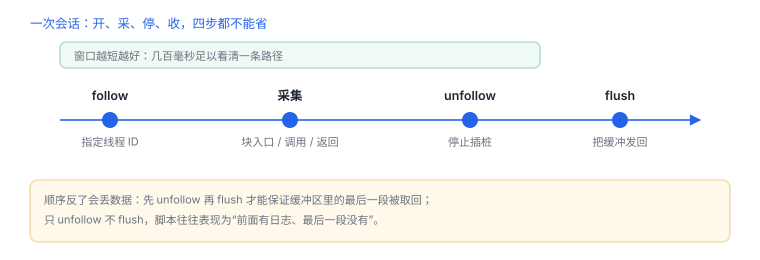

Stalker：指令级追踪
把每条指令变成回调，代价是几十倍时间；窗口越短越有用
Stalker 不是断点也不是采样：它按基本块重编译目标线程的代码，插好回调再执行。因此能看到完整执行序列，代价是速度下降一到两个数量级。
1. 工作方式
- 接管目标线程，拦截执行流。
- 以基本块（顺序执行、末尾分支的一段）为单位复制代码并插入回调。
- 重编译结果放进代码缓存，下次直接跳过去。
- 按配置上报事件：块入口、调用、返回、指令级。
2. 开销：三档配置差两个数量级
| 配置 | 量级 | 适合 |
|---|---|---|
| 只记录块入口 | 约 10× | 覆盖率、执行路径 |
| 记录调用与返回 | 约 20–50× | 函数级调用图 |
| 逐指令回调 | 50–100× 以上 | 短窗口、算法定位 |
这些是量级而非精确值，随设备、指令密度与回调复杂度变化。原则：窗口越短越好，回调里不做重活。
短窗口原则
Stalker 的价值在“看清一小段”，而不是“一直开着”。把窗口压到几百毫秒，往往比调低事件类型更有效。
Stalker 的价值在“看清一小段”，而不是“一直开着”。把窗口压到几百毫秒，往往比调低事件类型更有效。


3. 代码形态
JavaScript：跟踪当前线程的调用（自有应用）
const tid = Process.getCurrentThreadId();
Stalker.follow(tid, {
events: { call: true, ret: true },
onCallSummary(summary) {
console.log(JSON.stringify(summary).slice(0, 400));
}
});
// 观察结束后必须收尾，否则线程一直跑在插桩副本上
setTimeout(() => { Stalker.unfollow(tid); Stalker.flush(); }, 3000);onCallSummary 给出“谁调用了谁”的计数汇总；要看顺序就换成事件回调，但日志量会急剧上升。

4. 适用与不适用
| 任务 | 适合 | 替代 |
|---|---|---|
| 找加密/校验算法入口 | 是：从输入追到输出 | 断点 + 调用栈 |
| 确认按钮触发了哪些函数 | 是：短窗口 | 符号断点 |
| 长时间观察 UI 滑动 | 否：开销压垮帧率 | 采样、signpost |
| 分析系统框架内部 | 风险高 | 日志、公开文档 |
5. 平台限制
- 可执行内存：插桩副本需要可写可执行页，无动态代码权限的环境用不了。
- 架构：arm64e 的指针签名与跳转校验更严格，可能失败或需要额外处理。
- 线程范围：默认只跟一个线程，跨线程要显式 follow，容易漏异步路径。
- 边界：跨内核或框架的路径可能无法完整重编译。
6. 失败分流
| 现象 | 原因 | 查哪里 |
|---|---|---|
| 开启后卡死 | 回调太重或窗口太长 | 缩短窗口、减少事件类型 |
| 没有数据 | 跟错线程 | 确认主线程/工作线程 ID |
| 调用丢失 | 异步线程未 follow | 对关键线程显式 follow |
| 跳转处崩溃 | 架构或签名不兼容 | 换设备或改用断点 |
| 日志爆炸 | 事件太多 | 只留 call 并采样 |
7. 数据细节：事件类型与开销的对应
| 事件 | 记录什么 | 相对开销 |
|---|---|---|
| 块入口 | 基本块地址 | 约 10× |
| 调用 / 返回 | 调用关系 | 约 20–50× |
| 逐指令 | 每条指令 | 约 50–100× |
| 编译事件 | 哪些块被重编译 | 低，适合看覆盖面 |
先用“编译事件”确认插桩是否覆盖到目标区域，再开调用或逐指令事件，能省掉大量无效日志。
8. 一次真实排查记录：开了却没有任何数据
- 现象：Stalker 已开启，回调一次都没触发。
- 先确认线程：默认只跟一个线程，业务是否跑在别的线程上。
- 再确认开关：跟随后是否立即 unfollow，窗口太短没等到执行。
- 验证：改跟主线程并延长窗口到数秒，看是否有数据。
- 结论与限制：记录“跟错线程”，并注明结论只对该执行路径成立。
9. 自测
- Stalker 为什么必须重编译代码，而不能像断点那样改几个字节？
- “块入口”与“逐指令回调”在开销上差多少量级？
- 为什么跨线程分析容易漏数据？
- 什么情况下应放弃 Stalker 改用采样？